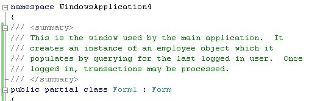
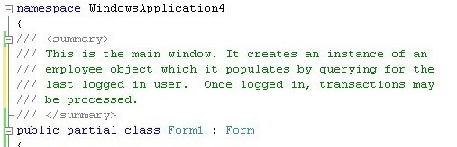
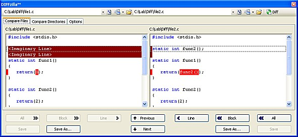
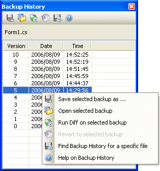
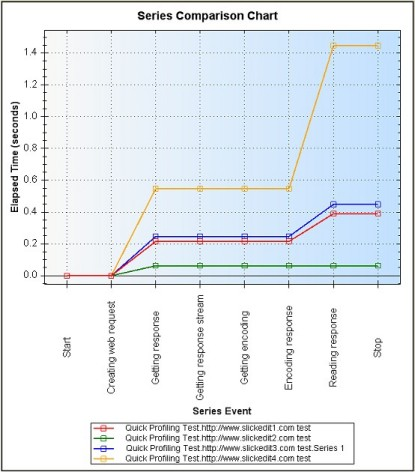
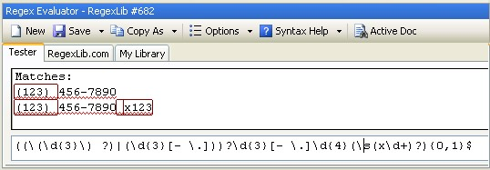
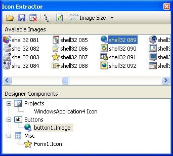

Title: SlickEdit® Tools for Microsoft® Visual Studio® 2005 Description: Introducing a set of tools designed to speed up development and dramatically increase productivity. Author: SlickEdit Inc. Email: info@slickedit.com Technologies:Visual Studio 2005 Keywords: Visual Studio, SlickEdit, Plug-In, Add-In, Tools, Productivity, Navigation Languages: All .Net languages and unmanaged C++ Target Audience: Developers Include Dis ussion: Yes
At SlickEdit, our goal is to provide high performance tools with innovative features that increase developer productivity. For over eighteen years, our commitment has been to provide developers with superior products and services that dramatically increase your ability to meet aggressive software development deadlines. Developers are passionate about development tools. We share that passion. Therefore, we use our products daily in our own development activities and continually strive to exceed your expectations.
SlickEdit® Tools for Microsoft® Visual Studio® 2005 offers a robust set of features that integrate into the Visual Studio environment, making SlickEdit® Tools an essential productivity tool for power programmers. A trial version of the product may be downloaded by clicking this link.
Code editors are designed to excel at formatting code, not plain text files. For normal coding purposes, this is what a developer would expect. However, when a developer needs to write verbose comments, this becomes a real problem. Every developer has experienced the problem of trying to update multi-line comments and having to realign all of the commented text so that the lines have a relatively uniform size.
SlickEdit’s Comment Wrapping solves this problem by enhancing the code editor to wrap comments automatically. Wrapping works with any type of multi-line comment: line comments, block comments, and XMLdoc and Javadoc comments. Now, when you need to remove two words from the first sentence of a 10-line comment block, all of the realignment of your block comment will be done for you, just like word wrap in a word processor.
The following screen shot shows an XMLdoc comment with comment wrapping turned on.

The next screen shot shows the comment after editing just the first sentence. The rest of the paragraph is
naturally wrapped to fit in the defined margins.

DIFFzilla® is a powerful file differencing tool that lets you compare files or directories and view the
differences side-by-side. You can make edits, merge changes, and save modified files easily within the results
windows. As edits are made, the diff view is updated as you type, so you don't have to re-run the comparison.
And, switching from a directory comparison to an individual file difference is as simple as a mouse click.

|
Many projects have standards for checking in code. Often you might want to view or restore an earlier version that is not ready for check-in. Backup History creates files containing just the differences between each saved version of a file. This saves disk space and provides a convenient way to access previous versions of a file even if it has not been checked into source control. Previous versions may then be reloaded or diffed using with Diffzilla®. Backup History does not replace source control... it bridges the gap between check-ins, providing a greater safety net for your coding. |
 |
Directory aliases are essentially short identifiers for long directory names, which save a lot of typing and mouse use when opening files through the Open File dialog. There are a handful of directories that developers are always browsing to. Defining aliases for these directories means not having to spend lots of time navigating to them.
Acronyms, short identifiers for long identifiers, work similarly but are applied to your code. Simply
type the alias or acronym, and with a key press, it can be expanded to its full text. By assigning an
acronym of "msg" to MessageBox.Show, over ten keystrokes can be saved every time you need to show a message
box.
The list of aliases and acronyms may be easily edited and added to, allowing you to customize them to fit your needs.
|
Profiling is the ability to time areas of an application so that bottlenecks can be discovered. There are several profilers available that provide full profiling of an application. However, many of these profilers come with limitations: |
|
Visual Studio itself comes with a profiler that can be added to the solution to instrument code performance. However, with this tool, profiling may only be done by launching the application through the profiling tool window, and Web applications and services are extremely difficult to profile with it. It provides very little flexibility for determining what specific areas to profile and for viewing the results. SlickEdit® Tools offers a unique solution for profiling when a developer wants to fine tune their profiling to get information about a specific section of their code. Quick Profiling provides extremely precise control over what code is being timed and how it is being timed. It allows the developer to time many cases that aren't possible with standard profilers, such as timing complex loops, recursive functions, thread synchronization and the time between an object’s creation and disposal. Furthermore, with the Quick Profiling Report tool, the results of several runs may be compared to view the results of code changes and determine the effect of those changes. |
 |
Developers have the ability to add XMLdoc to their code elements, similar to Javadoc. Microsoft Visual Studio allows the developer to output their XMLdoc comments to an XML file during the build step, which is then used for Intellisense®. Unfortunately, Visual Studio 2005 itself does not provide any way to turn those comments into documentation for the code base.
The Auto Code Doc Viewer tool provides an easy way to turn your header comments into MSDN-like documentation*.
The tool extracts all header comments, whether they are XMLdoc, line comments, or block comments, and
will create fully linked HTML help that can be browsed inside Visual Studio as a tool window. All help pages
provide a link to jump directly to the source code, so it's easy to get from a help page to the actual source
code. The generated HTML help pages may also be exported to a folder for viewing in an external Web browser
and sharing with others.
* Web projects and J# projects are currently not supported.
Regular expressions are used to express text patterns for searching. The Regex Evaluator provides the
capability to interactively create, save, and re-use tests of regular expressions. It may also be used to
test regular expressions against the text in the active editor window.

|
One of the most tedious chores of developing an application is adding icons or images to the user interface. First, it is often difficult to find good icons or images. Second, the list of controls that typically need icons is long: menus, context menus, toolbar buttons, regular buttons, status bars, even the form itself. Finally, the process of adding a single icon or image takes several steps, from finding the right property to browsing for the right image file. SlickEdit's Icon Extractor is designed to find quality icons and make it as easy as possible to apply them to your Windows application. It has the ability to search Windows executables and DLLs (both managed and unmanaged) for embedded icons and images. These icons and images are presented in a list and can be applied to WinForm designer components with simple drag-and-drop operations. Icons and images may also be exported to disk for other use. It is now easy to add that visual “snap” to your applications. |
 |
At SlickEdit, we are confident that you will be as excited about the latest release of SlickEdit® Tools for
Microsoft Visual Studio 2005 as we are. Download the trial version and try it out for yourself.
Download the trial of SlickEdit® Tools for Microsoft Visual Studio 2005